| Date | Symbol | TF | Pattern | Dir | Verdict | Claude Pattern | Claude Dir | Conf | Rec |
|---|---|---|---|---|---|---|---|---|---|
| crypto 10 patterns | |||||||||
| 2026-10-01 | DOGE-USD | 1d | Descending | LONG | Disputed | ? | ? | Certainty: 80 | — |
Chart 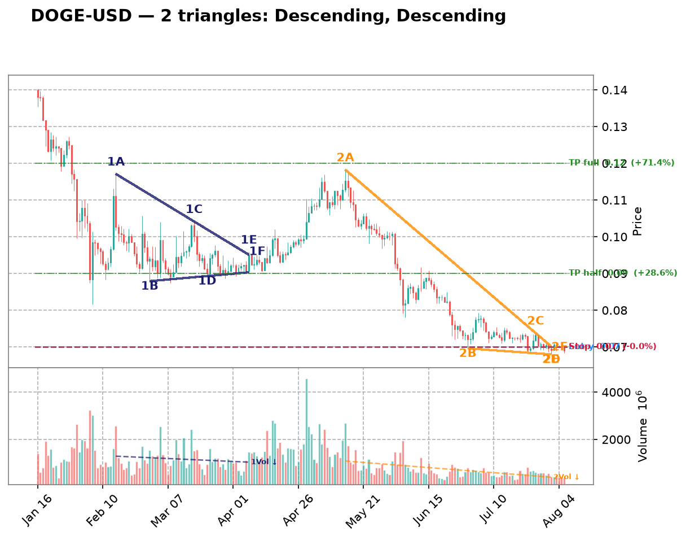 Claude Notes The right edge of the chart (late June through early August) shows price action that has flattened out around 0.068-0.078, but this looks more like a basing/consolidation range than a descending triangle. There's no clear series of lower highs converging into a flat support line - the highs and lows both appear roughly flat/choppy with no discernible converging trendlines. The move into this zone was a sharp downtrend from May highs (~0.115) to current levels, followed by sideways chop with small overlapping candles - this resembles consolidation after a decline, not a well-defined triangle with 2+ clean touches on both a falling resistance and flat support. I disagree with the algorithm's descending triangle flag because the resistance line isn't clearly descending with distinct lower-high touch points; it's more flat/noisy than a converging pattern. Presence certainty 80/100 — how sure Claude is that its found/not-found call is correct | |||||||||
| 2026-10-01 | XRP-USD | 1d | Descending | LONG | Disputed | ? | ? | Certainty: 72 | — |
Chart  Claude Notes The right side of the chart (Jun 15 - Aug 04) shows a relatively flat, choppy consolidation between roughly 1.05 and 1.20, not a clear converging triangle. There's no well-defined descending resistance line with consistently lower highs - the highs bounce around in a range (e.g., ~1.20 in late Jun, ~1.18 in mid-Jul, ~1.17 in late Jul) without clean convergence toward the flat support near 1.05-1.07. This looks more like sideways consolidation/basing after a steep downtrend than a descending triangle. The price action lacks the progressively tightening range needed for a credible triangle; it's more of a rectangle/range-bound pattern with noisy touches on both sides. Presence certainty 72/100 — how sure Claude is that its found/not-found call is correct | |||||||||
| 2026-10-01 | ETH-USD | 1d | Symmetric | SYMMETRIC | Disputed | ? | ? | Certainty: 72 | — |
Chart  Claude Notes The right side of the chart (mid-June to late July) shows a recovery from the ~1550 low into a choppy, roughly flat consolidation range between ~1800 and ~1950. The highs and lows are not converging - price has been moving mostly sideways in a tight band rather than compressing into an apex. There's no clear descending upper trendline or rising lower trendline with consistent touch points forming a narrowing wedge. This looks more like a flat/rectangular consolidation after a sharp downtrend and recovery, not a symmetric triangle. The algorithm likely mistook general price compression (low volatility consolidation) for a triangle, but the trendlines don't show clear convergence toward an apex. Presence certainty 72/100 — how sure Claude is that its found/not-found call is correct | |||||||||
| 2026-10-01 | VET-USD | 1d | Descending | LONG | Disputed | ? | ? | Certainty: 70 | — |
Chart  Claude Notes From late June through late July price has been moving sideways in a tight range (~0.0044-0.0050) rather than converging into an apex. There's no clear descending upper trendline with lower highs - the highs in July are roughly flat/choppy, not declining, and the lows are also flat rather than rising. This looks more like a flat consolidation/basing range after a steep downtrend than a descending triangle. The algorithm may be picking up on the overall downtrend from May into June feeding into this range, but the right-edge structure lacks the clear converging trendlines needed for a credible triangle - there's no discernible apex forming, and touches on both sides are at similar levels rather than converging. Presence certainty 70/100 — how sure Claude is that its found/not-found call is correct | |||||||||
| 2026-10-01 | SOL-USD | 1d | Symmetric | SYMMETRIC | Disputed | ? | ? | Certainty: 68 | — |
Chart  Claude Notes From late June through late July price shows a gradual downtrend with lower highs (82 -> 78 -> 75) but the lows are also declining (76 -> 74 -> 72), making the range roughly flat to mildly descending rather than converging into an apex. There's no clear rising support line required for a symmetric triangle - both boundaries are flat-to-slightly-down, which looks more like a shallow descending channel/consolidation than a true converging triangle. Touch points on a would-be lower support are inconsistent (lows near 76, 74, 72, 71 are trending down at similar slope to the highs, not converging). I don't see the apex compression the algorithm flagged; price looks like it's drifting sideways/down without a clean wedge shape, so I disagree with the Symmetric triangle call. Presence certainty 68/100 — how sure Claude is that its found/not-found call is correct | |||||||||
| 2026-10-01 | MANA-USD | 4h | Ascending | SHORT | Disputed | ? | ? | Certainty: 82 | — |
Chart 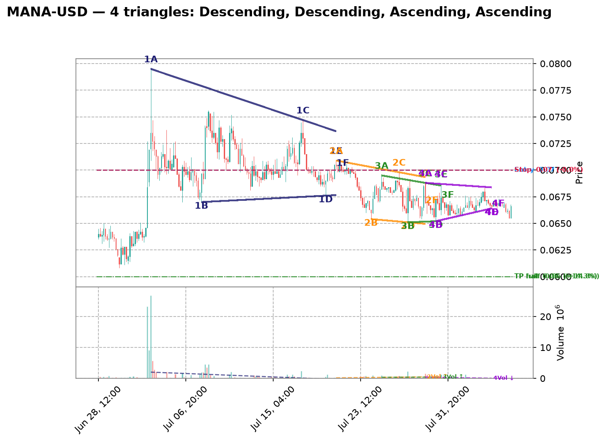 Claude Notes The right side of the chart (late July into early August) shows price trading in a tight, flat, range-bound band between roughly 0.0655 and 0.0685 with no clear rising lower support line or converging structure. Highs and lows are essentially horizontal, not forming higher lows (ascending) or lower highs/converging trendlines. This looks more like a flat consolidation/rectangle than an ascending triangle. The algorithm likely mistook a flat range for a triangle, but there's no visible convergence toward an apex - both boundaries appear roughly parallel/flat rather than compressing. I disagree with the ascending triangle call since there's no rising support trendline evident in the last 15-20 candles. Presence certainty 82/100 — how sure Claude is that its found/not-found call is correct | |||||||||
| 2026-10-01 | SAND-USD | 4h | Descending | LONG | Disputed | ? | ? | Certainty: 72 | — |
Chart 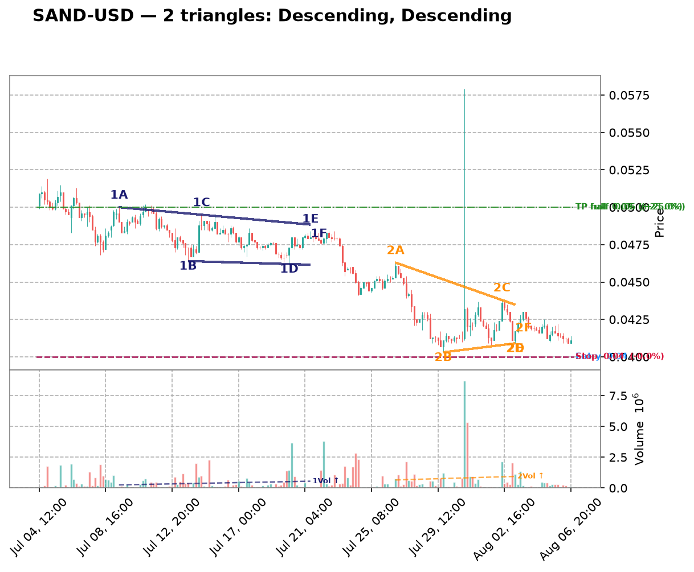 Claude Notes The overall structure from early July through early August is a persistent downtrend with lower highs and lower lows, not a converging triangle. Price dropped from ~0.051 to ~0.041 with no clear flattening support line - the 'lows' around 0.044-0.045 (late July) briefly stabilized but then broke down further to ~0.041, and the most recent price action (Aug 2-6) is simply drifting sideways/slightly down in a tight range around 0.041-0.044 without any clear rising support or converging resistance. There's no well-defined descending upper trendline with 3+ touches of lower highs converging against a flat support - the recent consolidation looks more like a flag/range after the downtrend than an active triangle apex. I don't see the two distinct converging boundaries required to call this a credible descending triangle; it looks more like trend continuation/consolidation noise near the lows. Presence certainty 72/100 — how sure Claude is that its found/not-found call is correct | |||||||||
| 2026-10-01 | XLM-USD | 3h | Descending | LONG | Disputed | ? | ? | Certainty: 85 | — |
Chart  Claude Notes The chart shows a clear sustained downtrend with a series of lower highs and lower lows from early July through early August, not a converging triangle. There's no flat or rising support line near the right edge — price has been making consistently lower lows (0.18 -> 0.175 -> 0.17 -> 0.16) and lower highs, forming a descending staircase pattern rather than a triangle. Near the right edge, price is still declining with no visible compression or narrowing range; volatility and candle ranges remain fairly constant or even widen slightly, not converging toward an apex. There's no evidence of a rising support line with higher lows needed for an ascending triangle. I disagree with the algorithm's flag — this looks like a continuation downtrend/staircase pattern, not a triangle formation. Presence certainty 85/100 — how sure Claude is that its found/not-found call is correct | |||||||||
| 2026-10-01 | ETC-USD | 3h | Descending | LONG | Disputed | ? | ? | Certainty: 82 | — |
Chart 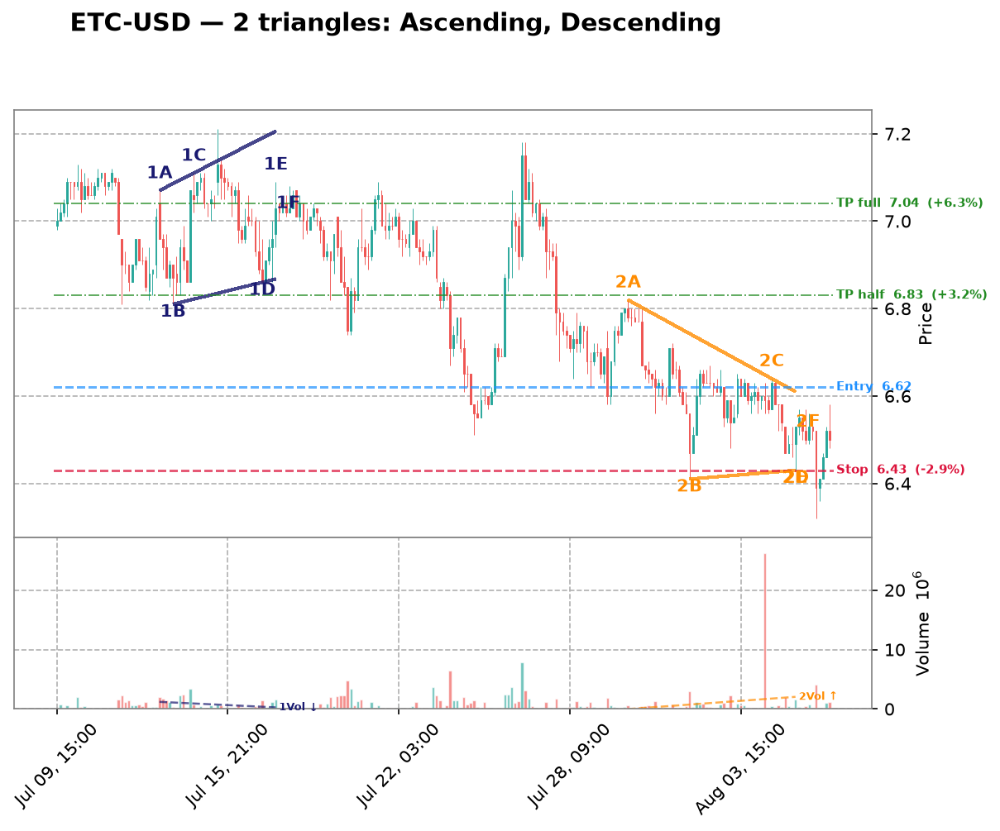 Claude Notes The chart shows a clear, persistent downtrend from ~7.2 to ~6.4 with lower highs and lower lows throughout, not a consolidating triangle. There is no flat or rising support line - lows keep stepping down (6.9->6.7->6.55->6.4) in roughly equal fashion to the falling highs, which is more consistent with a descending channel/trend than a converging descending triangle. A descending triangle requires a flat horizontal support base with repeated bounces at the same level, which is absent here; the support is also sloping down, not flat. Near the right edge, price is still declining with no sign of compression or basing - it just made a new low around 6.35-6.4 and is drifting sideways-to-down. This looks like trend continuation, not an apex-forming triangle, so I disagree with the algorithm's descending triangle (LONG) call. Presence certainty 82/100 — how sure Claude is that its found/not-found call is correct | |||||||||
| 2026-10-01 | VET-USD | 3h | Ascending | SHORT | Disputed | ? | ? | Certainty: 78 | — |
Chart 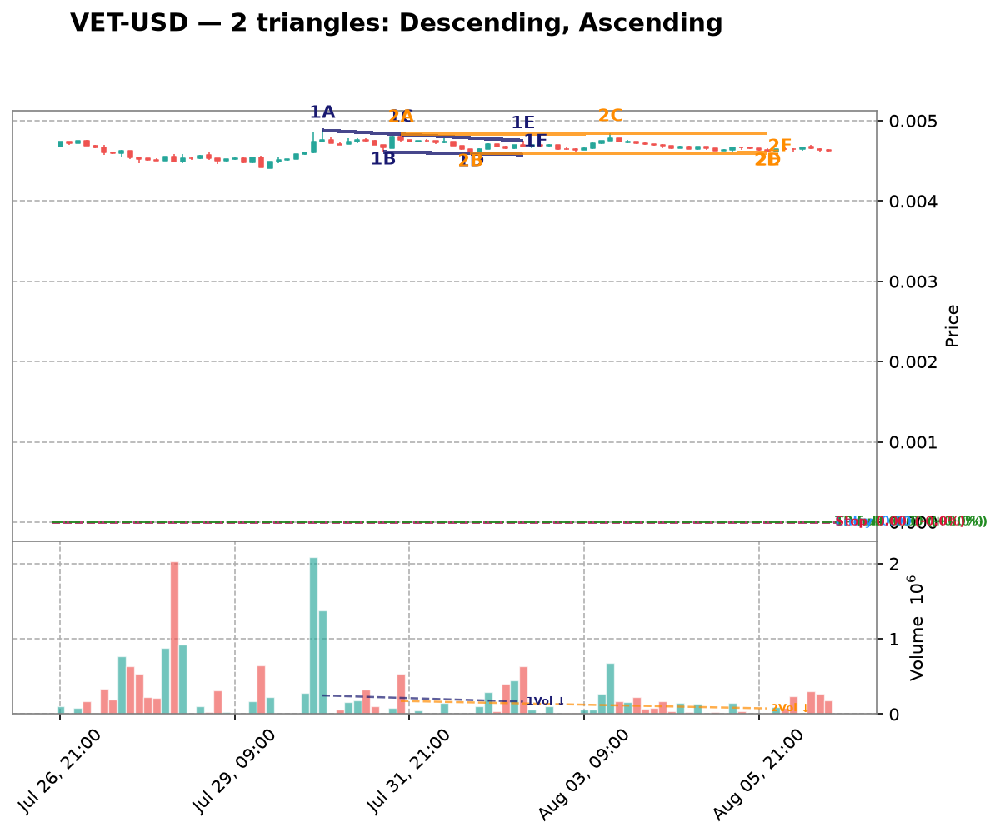 Claude Notes The right side of the chart shows a choppy range between ~0.00463 and ~0.00478, with no clear higher-low structure. Lows around Aug 3-6 are roughly flat to slightly declining (0.00465, 0.00463, 0.00460, 0.00463), not rising, so the 'ascending' lower trendline doesn't hold. Highs are also irregular (spike to 0.00485 then declining into 0.00466-0.00468 range) rather than a clean flat resistance. This looks more like a sideways consolidation/range with a mild downward drift than a converging ascending triangle. I don't see a credible 2-3 touch rising support line that aligns with a flat resistance - price action looks more like noise/range-bound drift after the prior swing high. Disagree with algorithm's ascending triangle call; structure is ambiguous but leans toward no clear triangle. Presence certainty 78/100 — how sure Claude is that its found/not-found call is correct | |||||||||
| crypto-equity 5 patterns | |||||||||
| 2026-10-01 | MSTR | 3h | Descending | LONG | Disputed | ? | ? | Certainty: 68 | — |
Chart  Claude Notes From mid-July onward price has mostly moved sideways in a choppy range between ~90 and ~103 without clear convergence. Highs are not forming a consistent descending line (e.g., Jul 20-22 peaks near 102-103 are similar to early-Aug peaks near 98-99, and lows bounce around 90-96 without a clean flat support). This looks more like a broad horizontal consolidation/range than a descending triangle with a defined flat bottom and lower highs converging toward an apex. There isn't a clean, repeated touch pattern on both sides compressing toward a point near the right edge - the recent candles (late Jul-early Aug) show a slight uptrend in both highs and lows, which contradicts a descending triangle structure. I'd call this a non-triangle consolidation rather than a credible descending triangle. Presence certainty 68/100 — how sure Claude is that its found/not-found call is correct | |||||||||
| 2026-08-09 | MSTR | 1h | Ascending | SHORT | Disputed | ? | ? | Certainty: 78 | — |
Chart 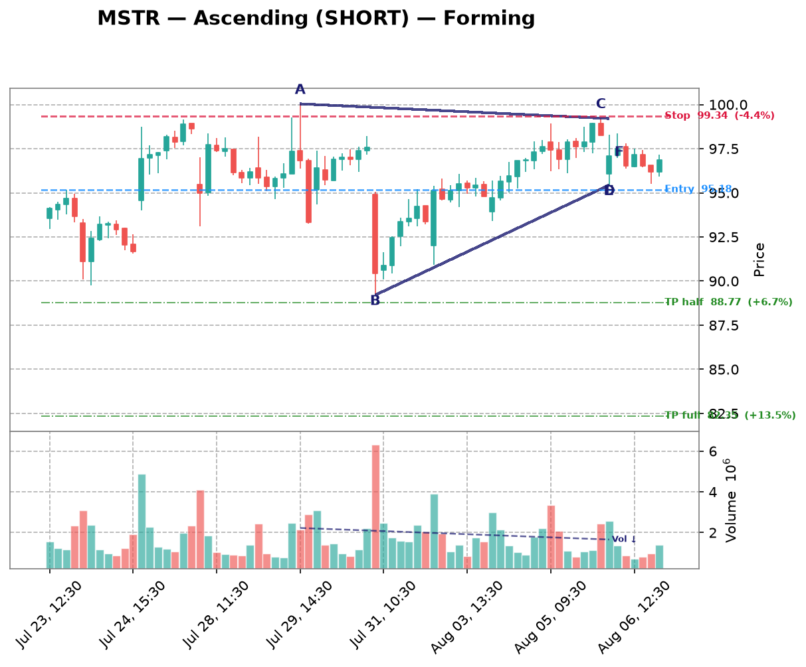 Claude Notes The right-side price action (late Aug 5 into Aug 6) shows a decline from ~99 to ~96.5 with lower highs and lower lows together — this looks like a mild downtrend/pullback rather than a converging triangle with a rising support line. There's no clear rising trendline of higher lows; instead both highs and lows are declining in tandem, more consistent with a small descending channel or simple retracement than an ascending triangle. No flat resistance line is visible either (highs are dropping from ~99 to ~97.5 to ~97). I don't see the two clearly converging trendlines required for a valid triangle at the right edge, so I disagree with the algorithm's ascending triangle / short flag. Presence certainty 78/100 — how sure Claude is that its found/not-found call is correct | |||||||||
| 2026-08-09 | CIFR | 1h | Descending | LONG | Disputed | ? | ? | Certainty: 78 | — |
Chart 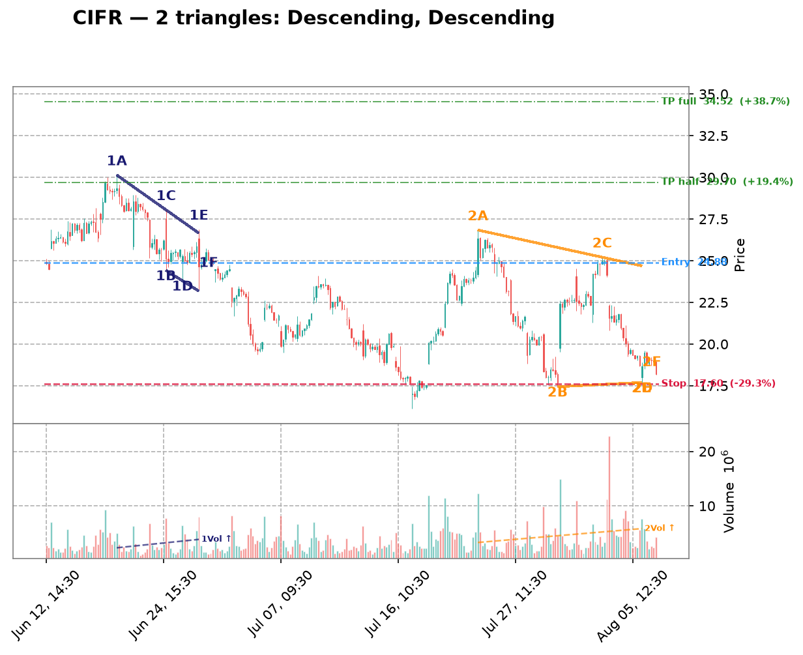 Claude Notes The chart shows a series of large swing oscillations (roughly 26->18->24->17->26->18->25->18) rather than a converging structure. Each swing has similar amplitude, indicating a broad trading range/downtrend with volatility rather than a narrowing triangle. Near the right edge, price is declining from ~25 to ~18-19 with no flattening support line or clear lower highs converging into an apex - the recent candles show a steady downward slide, not compression. There is no consistent horizontal support with descending highs; the swings are too wide and repetitive to qualify as a descending triangle. I disagree with the algorithm's flag - this looks like continued range-bound/down-trending price action, not a triangle nearing apex. Presence certainty 78/100 — how sure Claude is that its found/not-found call is correct | |||||||||
| 2026-08-09 | MARA | 1h | Descending | LONG | Disputed | ? | ? | Certainty: 78 | — |
Chart 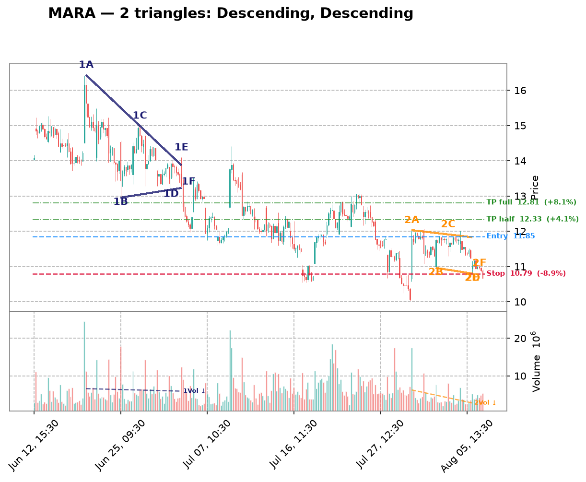 Claude Notes {
"found_triangle": false,
"pattern_type": null,
"direction": null,
"presence_confidence": 78,
"pattern_quality": null,
"notes": "The chart shows an overall downtrend with successive lower highs (15, 14, 13, 12.7, 12) and lower lows (12, 11.8, 10.7, 10, 10.7), forming a descending staircase rather than a converging triangle. There's no flat/horizontal support line - the lows are also declining, not holding at a consistent level. At the right edge, price is consolidating in a tight range around 10.7-12 but without clear evidence of a rising lower boundary or flat lower support meeting a descending upper trendline with 3+ touches each. This looks more like a broader downtrend with intermittent consolidation than a well-defined descending triangle. The algorithm's flag is plausible given the recent narrowing range, but the lower boundary isn't flat - it's still sloping down, making this more consistent with a bearish channel/flag than a classic descending triangle setup for a LONG bias, which would typically need a firm horizontal support.",
} Presence certainty 78/100 — how sure Claude is that its found/not-found call is correct | |||||||||
| 2026-08-09 | IREN | 1h | Symmetric | SYMMETRIC | Disputed | ? | ? | Certainty: 72 | — |
Chart 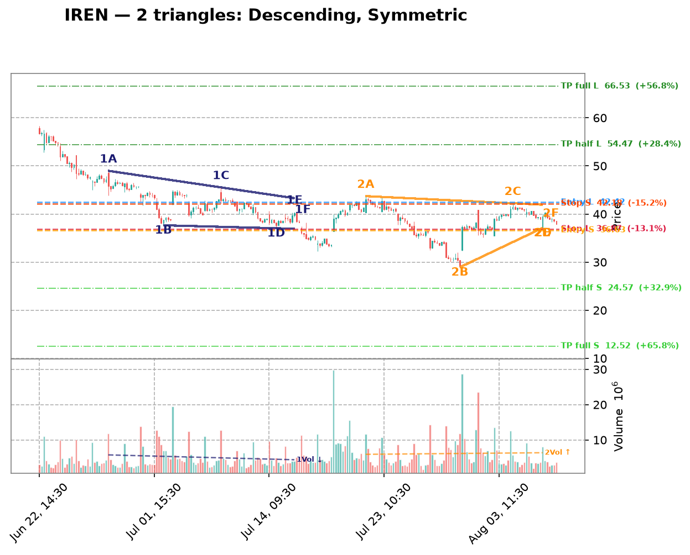 Claude Notes The chart shows a broad downtrend from late June (~57) into a choppy bottoming/ranging structure from mid-July through early August, oscillating between roughly 30 and 44 with multiple swing highs and lows of similar magnitude - more like a wide horizontal range than a converging wedge. Near the right edge (early August), price is bouncing between ~37-41 without clear narrowing of highs and lows; recent candles show similar range width to prior weeks rather than compression toward an apex. I don't see two clearly converging trendlines with consistent touch points - the swing highs (44, 43, 41) and lows (33, 30, 36) don't form a tight symmetric convergence, they look more like a rounded/ranging base. I disagree with the algorithmic flag; this looks more like consolidation/basing after a downtrend rather than a well-defined symmetric triangle. Presence certainty 72/100 — how sure Claude is that its found/not-found call is correct | |||||||||
| mega-cap 4 patterns | |||||||||
| 2026-10-01 | AMZN | 1d | Descending | LONG | Disputed | ? | ? | Certainty: 82 | — |
Chart 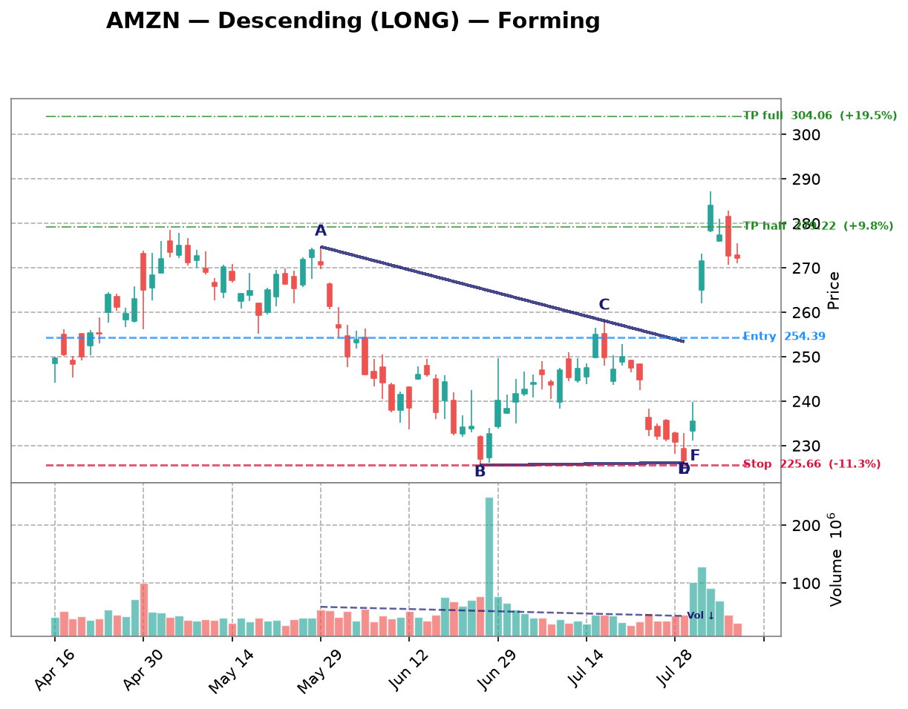 Claude Notes The right edge of the chart shows a sharp impulsive rally from ~262 to ~286 followed by a pullback to ~273-281, not a converging compression pattern. There's no flat support line or descending resistance line with multiple touches - just a single strong up-move with a few days of consolidation/pullback at the top. This looks more like a breakout/pullback after a reversal from the June low than a descending triangle. A descending triangle requires a series of lower highs against a flat support tested multiple times, which isn't present here - there are only 2-3 candles at the recent high, insufficient touch points to confirm a trendline on either side. I disagree with the algorithm's flag. Presence certainty 82/100 — how sure Claude is that its found/not-found call is correct | |||||||||
| 2026-10-01 | NVDA | 1d | Descending | LONG | Disputed | ? | ? | Certainty: 80 | — |
Chart  Claude Notes The right portion of the chart shows a sharp V-shaped reversal: price dropped to ~190 in early August then rallied strongly to ~220 over the last few candles. This is a sharp impulsive move, not a converging triangle structure. There's no clear flat support with lower highs converging - instead we see a clean breakout/reversal with strong momentum candles. No credible descending triangle touch points exist on the right edge; the algorithm likely mistook the prior consolidation (Jun-Jul) mixed with the recent bounce as a pattern, but there's no current compression - price already broke out upward decisively. Presence certainty 80/100 — how sure Claude is that its found/not-found call is correct | |||||||||
| 2026-10-01 | META | 1d | Descending | LONG | Disputed | ? | ? | Certainty: 70 | — |
Chart  Claude Notes The right side of the chart shows a choppy decline from ~690 (late Jun) to a low near 525 (late Jul), followed by a small bounce to ~600. This looks like a volatile downtrend/consolidation, not a clean descending triangle. There's no flat support line - lows keep dropping (660->630->525) and highs are also irregular, not forming consistent lower highs converging toward a flat base. Price action is more erratic/range-bound than a compressing wedge. I disagree with the algorithm's flag; the structure lacks the clear flat-bottom + descending-top geometry required for a descending triangle. Presence certainty 70/100 — how sure Claude is that its found/not-found call is correct | |||||||||
| 2026-10-01 | GOOGL | 4h | Ascending | SHORT | Disputed | ? | ? | Certainty: 85 | — |
Chart  Claude Notes The right side of the chart shows a sharp, strong uptrend from ~320 to ~382 followed by a sudden sharp reversal/pullback to ~357-365, not a converging consolidation. There's no clear flat or rising support with a flat resistance ceiling being tested multiple times - instead price made a vertical run and then one large reversal candle. This looks more like a blow-off top / failed breakout than an ascending triangle. There are not enough touch points on both upper and lower boundaries to confirm convergence; the recent candles are too few and too volatile (one huge red reversal candle) to define a reliable triangle. I disagree with the algorithm's ascending triangle call - the structure lacks the repeated higher-low touches and flat resistance needed, and the most recent price action suggests a sharp reversal rather than compression into an apex. Presence certainty 85/100 — how sure Claude is that its found/not-found call is correct | |||||||||
| semiconductors 3 patterns | |||||||||
| 2026-10-01 | ADI | 4h | Descending | LONG | Disputed | ? | ? | Certainty: 70 | — |
Chart  Claude Notes The chart shows a clear downtrend from late June through late July (440 to ~355), followed by a modest basing/consolidation in the last ~10 candles around 360-385. There isn't a well-defined flat support line with a clearly descending resistance line converging toward it - the recent price action looks more like a shallow bottoming/consolidation range than a classic descending triangle. Touch points on a 'flat support' are weak (only 2-3 candles near 355-365) and the 'resistance' line would need to be drawn through widely scattered highs (395, 385, 380) which isn't a clean descending line. This looks more like a down-move losing momentum and starting to flatten out, rather than a textbook triangle with apex compression. I'd disagree with the algo's descending triangle call - the structure is too loose and lacks the clean two-line convergence needed. Presence certainty 70/100 — how sure Claude is that its found/not-found call is correct | |||||||||
| 2026-08-09 | LRCX | 1h | Ascending | SHORT | Disputed | ? | ? | Certainty: 72 | — |
Chart 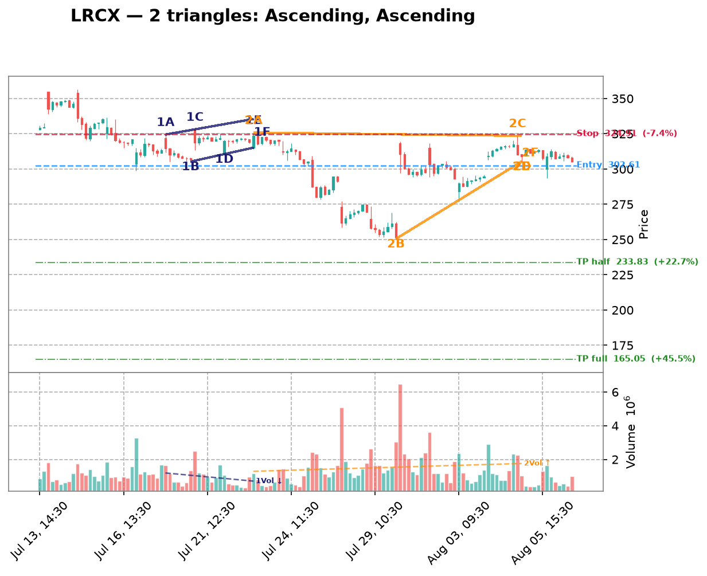 Claude Notes The right-side price action (early Aug) shows a choppy range between roughly 305-320, but there's no clear ascending support line—lows are flat/noisy (around 305-308) rather than making distinct higher lows, and the highs are also roughly flat (~315-320) rather than converging. This looks more like a horizontal consolidation/rectangle than a true ascending triangle. The algorithm likely flagged minor higher-low bumps, but there aren't 2-3 clean touch points forming a rising trendline distinct from a flat one. Prior to this, price action from mid-July was a clear downtrend with lower highs/lower lows, not a triangle. Given the ambiguity of the recent consolidation, I lean toward rejecting the triangle call, though a loose case for a shallow ascending structure isn't impossible. Presence certainty 72/100 — how sure Claude is that its found/not-found call is correct | |||||||||
| 2026-08-09 | AMAT | 1h | Symmetric | SYMMETRIC | Disputed | ? | ? | Certainty: 72 | — |
Chart 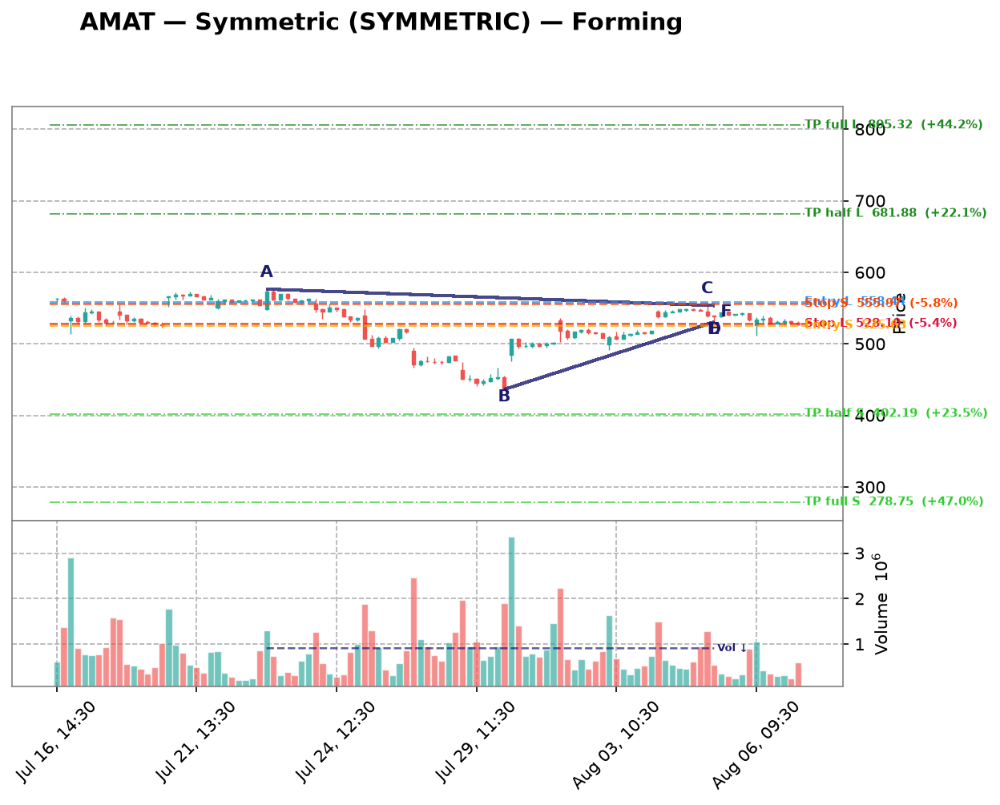 Claude Notes The right side of the chart shows a rally from ~500 to ~555 followed by a pullback to ~530, but this looks like a rounded top / pullback within a broader swing rather than a converging triangle. There's no clear sequence of lower highs meeting higher lows - the recent candles (Aug 03-08) show a peak around 555 then a fairly sharp drop to 530, which is more consistent with a short-term downtrend or consolidation than a symmetric wedge. I don't see at least two clean, roughly parallel converging trendlines with multiple touches on each side near the apex. The algorithm may be reacting to the general narrowing of range after the spike, but the touch points are too few and inconsistent to confirm a genuine symmetric triangle. Presence certainty 72/100 — how sure Claude is that its found/not-found call is correct | |||||||||
| forex 2 patterns | |||||||||
| 2026-08-09 | EURUSD=X | 1h | Ascending | SHORT | Disputed | ? | ? | Certainty: 82 | — |
Chart 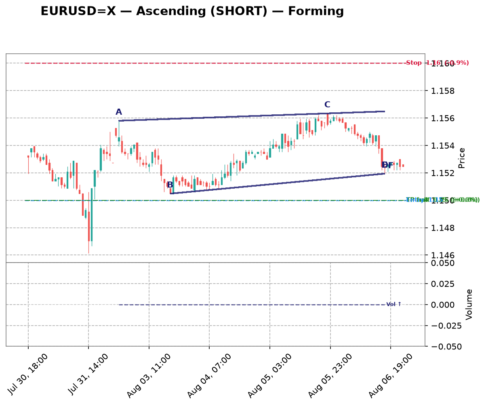 Claude Notes The right side of the chart shows a clear downtrend from the Aug 5 peak (~1.156) into Aug 6, with lower highs and lower lows in a fairly consistent decline, followed by a flattening/consolidation near 1.1525-1.153. There's no clear rising support line with higher lows to form an ascending triangle - instead price dropped sharply and is now consolidating in a narrow range without a defined converging structure. The algorithm's ascending triangle call doesn't fit since there's no series of higher lows visible; the recent price action looks more like a sharp decline stabilizing at a new lower level rather than a triangle compression. Not enough touch points on both an upper and lower trendline to confirm any triangle pattern near the apex on the right edge. Presence certainty 82/100 — how sure Claude is that its found/not-found call is correct | |||||||||
| 2026-08-09 | NZDUSD=X | 1h | Ascending | SHORT | Disputed | ? | ? | Certainty: 78 | — |
Chart 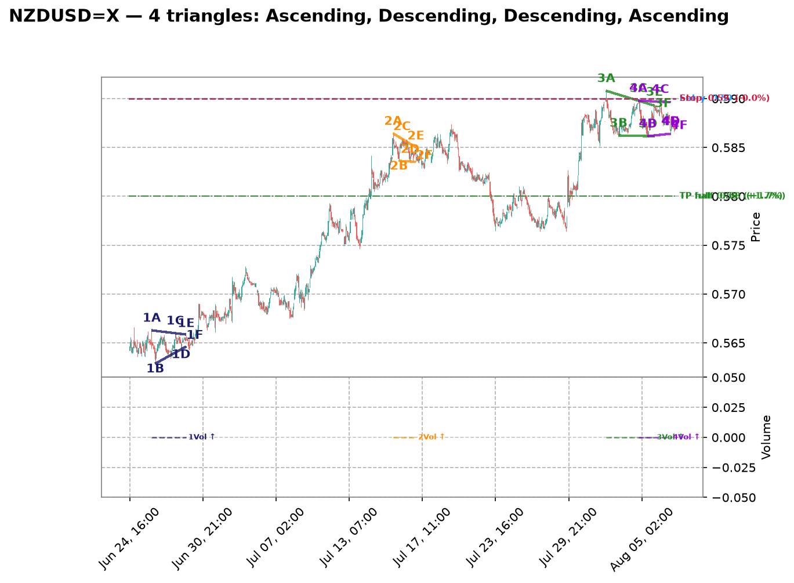 Claude Notes The right side of the chart shows price consolidating in a choppy range between ~0.5865 and ~0.590 after a strong impulsive rally from late July. However, this looks more like a flat/rectangular consolidation than an ascending triangle - the highs are roughly flat (~0.590) but the lows are also fairly flat/choppy (~0.5865-0.587), not showing a clear rising sequence of higher lows. There's no clean converging trendline structure - both boundaries appear roughly horizontal rather than one flat and one rising. This resembles sideways consolidation or a minor pullback/flag after the breakout rather than a textbook ascending triangle with rising support. The algorithm's flag seems to be picking up on the tightening range but the specific 'rising lower trendline' criterion for ascending triangle isn't clearly satisfied here. Presence certainty 78/100 — how sure Claude is that its found/not-found call is correct | |||||||||
| hardware 2 patterns | |||||||||
| 2026-10-01 | DELL | 1d | Ascending | SHORT | Disputed | ? | ? | Certainty: 75 | — |
Chart  Claude Notes The right side of the chart shows price oscillating in a choppy range between roughly 370 and 470 since early June, without a clear converging structure. Highs and lows are not consistently compressing - there are swings down to ~370-380 (late June, early August) and up to ~460-480 (mid-July, early August) that don't form a tightening wedge. This looks more like a sideways consolidation/range than a triangle. No clear rising support line with a flat resistance is visible - lows are irregular (420, 375, 385, 370) not monotonically rising. I disagree with the algorithm's ascending triangle call; the structure is better described as a volatile trading range. Presence certainty 75/100 — how sure Claude is that its found/not-found call is correct | |||||||||
| 2026-08-09 | STX | 1h | Descending | LONG | Disputed | ? | ? | Certainty: 72 | — |
Chart 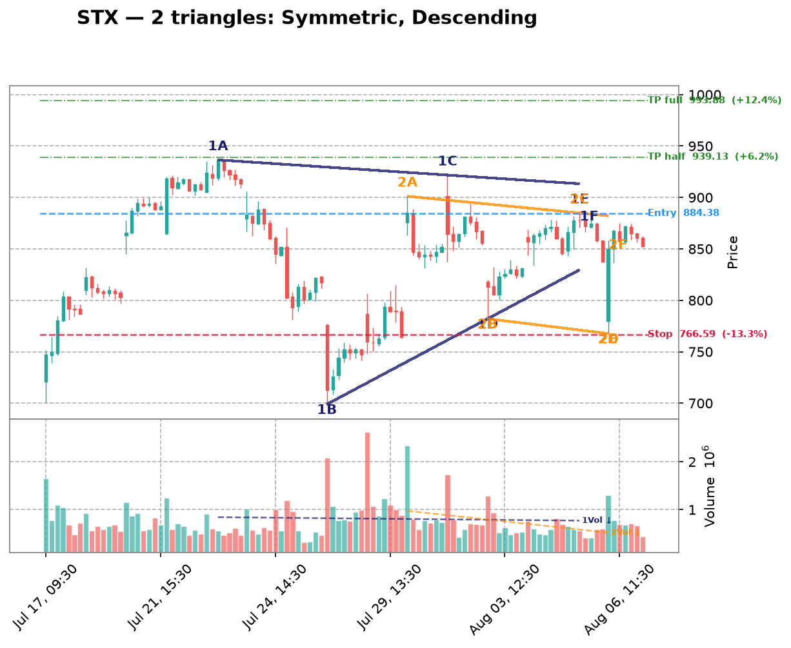 Claude Notes The right-side price action (Aug 03–06) shows a choppy, roughly flat range between ~815 and ~890 with no clear convergence — highs and lows are similarly spaced throughout rather than narrowing toward an apex. There's a sharp downside wick near Aug 06 breaking below the recent range low (~780), which argues against a clean descending triangle setup (support was violated, not respected). I don't see a consistent flat support line with lower highs converging into it; instead it looks like sideways consolidation/noise with one outlier spike down. Not enough clean touch points on both a flat lower line and a descending upper line to call this a credible descending triangle. Presence certainty 72/100 — how sure Claude is that its found/not-found call is correct | |||||||||
| space 2 patterns | |||||||||
| 2026-10-01 | GSAT | 1d | Descending | LONG | Disputed | ? | ? | Certainty: 85 | — |
Chart  Claude Notes The right side of the chart shows a sharp breakout rally from ~79 to ~85 over just a few candles, followed by slight consolidation/pullback at the highs (83-84). This is not a converging triangle structure - there's no clear series of lower highs meeting a flat support line with multiple touch points. Instead it's a strong impulsive move up followed by minor digestion. The algorithm's descending triangle flag doesn't match what's visible - there's no flat support base being tested multiple times, nor a clearly defined descending resistance line with 2+ touches. The pattern has already broken out strongly to the upside rather than showing pre-breakout compression. Presence certainty 85/100 — how sure Claude is that its found/not-found call is correct | |||||||||
| 2026-10-01 | SPCE | 4h | Descending | LONG | Disputed | ? | ? | Certainty: 68 | — |
Chart 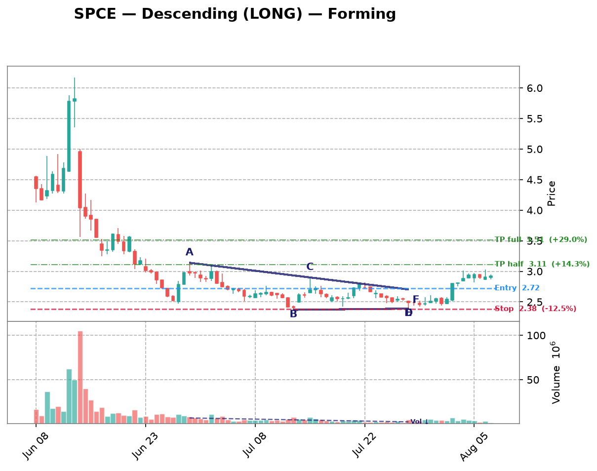 Claude Notes Price shows a sharp decline from early June highs (~$6) into a bottoming/basing phase around $2.5-3.0 from early July through early August, with a slight uptick at the very end. This is not a descending triangle - the lows are flat/choppy around $2.5-2.7 but there's no clear descending upper resistance line with consistent lower highs; instead price has been trading in a tight, mostly flat range with low volatility. The recent small rally to ~$2.9-3.0 looks more like a basing/consolidation breakout attempt than a triangle apex. No clear converging trendlines with 2+ touches on each side are visible - it's more of a flat consolidation box after a downtrend, not a classic descending triangle. Presence certainty 68/100 — how sure Claude is that its found/not-found call is correct | |||||||||
| adtech 1 pattern | |||||||||
| 2026-10-01 | U | 1d | Ascending | SHORT | Disputed | ? | ? | Certainty: 85 | — |
Chart  Claude Notes The chart shows a clear uptrend from late June through early August, culminating in a strong breakout with a large green candle and volume spike at the far right. There's no evidence of a converging triangle near the right edge - rather than compressing between two trendlines, price is in a strong, expanding rally with increasing candle ranges and volume. The algorithm's ascending triangle flag appears to be a false positive; there's no flat resistance being tested multiple times, just a steady climb that accelerates into a breakout. This looks like a continuation/breakout move, not a consolidation pattern. Presence certainty 85/100 — how sure Claude is that its found/not-found call is correct | |||||||||
| commodities 1 pattern | |||||||||
| 2026-10-01 | NEM | 4h | Descending | LONG | Disputed | ? | ? | Certainty: 80 | — |
Chart  Claude Notes The chart shows a clear downtrend from mid-June highs (~112) into a low around July 17-19 (~89-90), followed by a sustained recovery/uptrend into early August reaching ~105. This is a V-shaped reversal, not a converging triangle. There's no clear flat support with lower highs converging near the right edge - instead price has broken out strongly to the upside and is now consolidating at a higher level (103-106) after a clean rally. The recent candles (late July-August) show higher lows and higher highs, which is the opposite of a descending triangle setup. The algorithm likely misread the overall down-up structure as a descending triangle, but there's no clear flat lower support line with repeated touches, nor a well-defined descending upper trendline with multiple touches - the price action is dominated by a strong directional move (decline then rally) rather than compression into an apex. Presence certainty 80/100 — how sure Claude is that its found/not-found call is correct | |||||||||
| fintech 1 pattern | |||||||||
| 2026-10-01 | SOFI | 1d | Descending | LONG | Disputed | ? | ? | Certainty: 75 | — |
Chart  Claude Notes The right side of the chart shows a sharp drop to ~15 in late July followed by a strong V-shaped recovery back to ~18.5, not a converging triangle. There's no flat support line or descending resistance line with multiple touch points - instead it's an impulsive reversal move with a large volume spike at the low. Price action before that (Jun-Jul) shows a choppy range between ~17-19 but without clear convergence toward an apex. The algorithm's descending triangle flag doesn't hold up visually - there's no consistent flat bottom being tested multiple times near the current price, and the recent candles show expansion/breakout rather than compression. This looks more like range-bound consolidation followed by a V-reversal than a triangle. Presence certainty 75/100 — how sure Claude is that its found/not-found call is correct | |||||||||
| industrials 1 pattern | |||||||||
| 2026-08-09 | RCL | 1h | Ascending | SHORT | Disputed | ? | ? | Certainty: 80 | — |
Chart 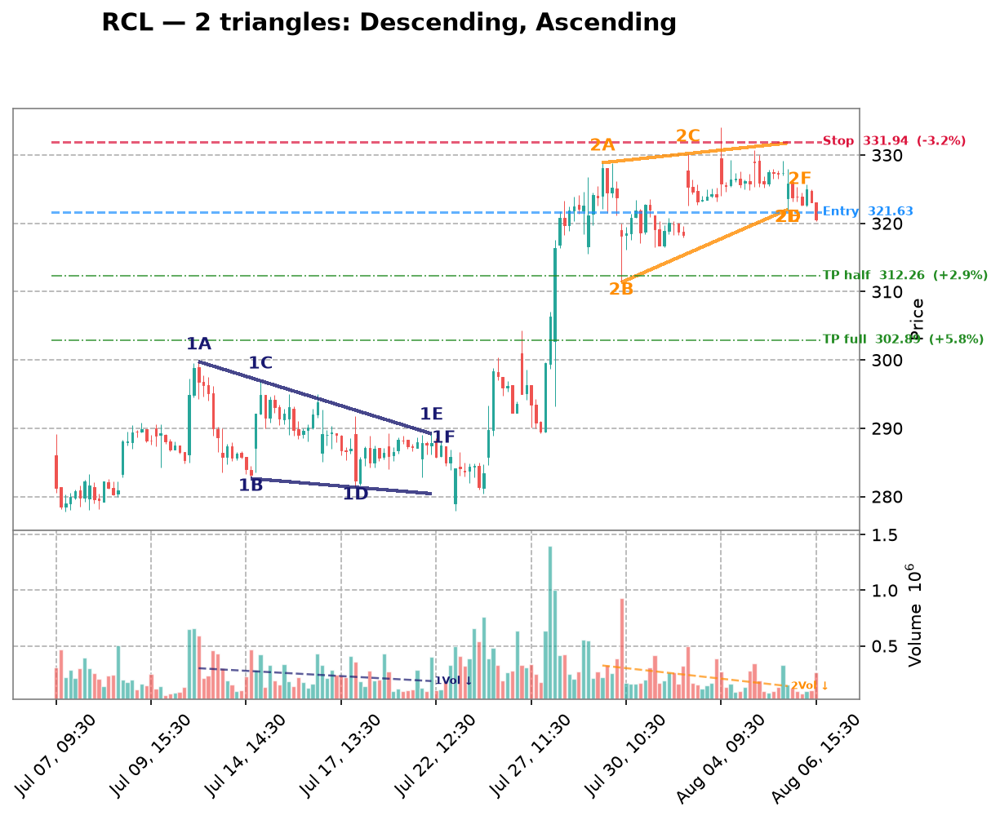 Claude Notes The right side of the chart shows price oscillating in a fairly flat range between ~318 and ~330 after a strong impulsive rally from late July. There's no clear rising lower support line - the recent lows (~320-322) are roughly flat or even slightly declining, not making higher lows as required for an ascending triangle. The highs are also roughly flat (~328-330) rather than converging with the lows. This looks more like a consolidation/range or minor pullback after a strong uptrend rather than a converging triangle. I don't see two clear trendlines converging toward an apex - the pattern lacks the compression structure needed. Disagreeing with the algorithm's ascending triangle flag; the structure is closer to a flat consolidation/rectangle than a triangle with rising support. Presence certainty 80/100 — how sure Claude is that its found/not-found call is correct | |||||||||
| internet 1 pattern | |||||||||
| 2026-10-01 | SNAP | 1d | Descending | LONG | Disputed | ? | ? | Certainty: 82 | — |
Chart  Claude Notes The chart shows a clear downtrend from late April through late June (lower highs and lower lows, roughly 6.3 to 4.3), then a basing/consolidation period from late June to early August with mostly flat, choppy price action. At the far right, price sharply gapped up and spiked to 5.8 before pulling back - this looks like a breakout/spike rather than a developing triangle. There's no clear converging structure: the consolidation phase (Jun 20-Aug 1) is more of a flat range/basing pattern than a descending triangle with lower highs, and the recent candles already broke out above the range with high volume rather than still compressing toward an apex. I don't see two consistent converging trendlines with multiple touches - the algorithm's descending triangle call doesn't hold up since the 'flat support' area has already been breached upward, and there isn't a clean declining upper trendline with repeated touches. Presence certainty 82/100 — how sure Claude is that its found/not-found call is correct | |||||||||